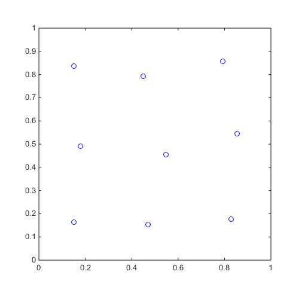

CODES / sampling / cvt
Generate centroidal Voronoi tessellation samples
Contents
Syntax
- x=CODES.sampling.cvt(N,dim) returns an N-by-dim matrix, x, containing centroidal Voronoi tessellation samples of N values in dim dimensions.
- x=CODES.sampling.cvt(...,'param',value) uses a list of parameters param and values value (see parameter table).
Parameters
| param | value | Description |
|---|---|---|
| 'dummies' | positive integer, {1e6} | Number of dummy points for centroid calculation |
| 'max_iter' | positive integer, {50} | Maximum number of iterations |
| 'delta' | positive real, {1e-4} | Stopping tolerance |
| 'lb' | (1 x dim) real, {0} | Minimum value of cvt samples per dimension |
| 'ub' | (1 x dim) real, {1} | Maximum value of cvt samples per dimension |
| 'halton' | logical, {true} | Use Halton sequence instead of random samples |
| 'kmeans' | logical, {false} | Use built-in Matlab kmeans function. Using kmeans leads to more accurate results but longer computation time. |
| 'kmean_options' | cell, { {} } | Name-value cell options for the kmeans function. See struct2nv |
| 'display' | logical, {true} | Level of display |
| 'force_new' | logical, {false} | Force to make new CVT |
| 'force_save' | logical, {false} | Force to save CVT |
| 'region' | function_handle, { [ ] } | Function that defines a specific region (≥0) |
Example
Compute a CVT of 9 points in 2 dimensions and plot
x=CODES.sampling.cvt(9,2); figure('Position',[200 200 500 500]) plot(x(:,1),x(:,2),'bo') axis([0 1 0 1]) axis square
Mini Tutorial
 |
A mini tutorial of the capabilities of the cvt function. |
Copyright © 2015 Computational Optimal Design of Engineering Systems (CODES) Laboratory. University of Arizona.
|
|
Computational Optimal Design of Engineering Systems |

|